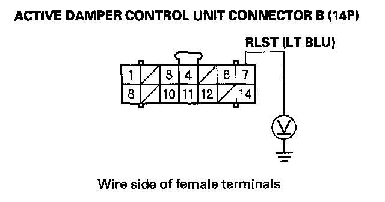
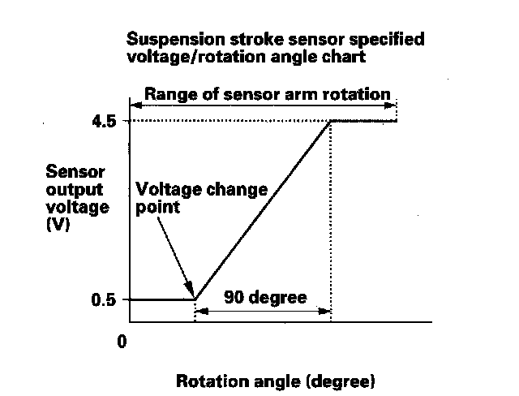
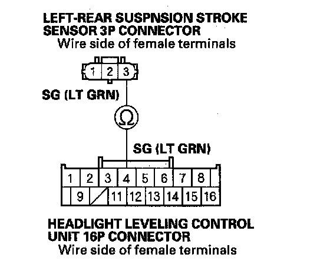
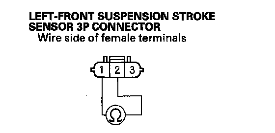
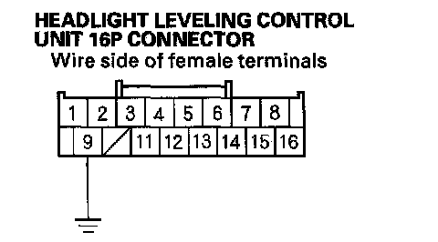

DTC 2-4
DTC 2-4: Left-rear Suspension Stroke Sensor Circuit High Voltage1. Turn the ignition switch ON (II).
2. Clear the DTC with the HDS.
3. Turn the ignition switch OFF.
4. Start the engine, and wait 5 seconds.
5. Check for DTCs with the HDS.
Is DTC 2-4 indicated?
YES - Go to step 6.
NO - Intermittent failure at this time. Check for poor or loose connections between the suspension stroke sensor and the active damper control unit.
6. Turn the ignition switch OFF.
7. Disconnect active damper control unit connector B (14P).
8. Disconnect the headlight leveling control unit connector (16P).
9. Turn the ignition switch ON (II).
10. Measure voltage between body ground and active damper control unit connector B (14P) terminal No. 7.

Is there more than 0.5 V?
YES - Repair short to power in the wire between the left-rear suspension stroke sensor, the headlight leveling control unit, and the active damper control unit.
NO - Go to step 11.
11. Turn the ignition switch OFF.
12. Reconnect active damper control unit connector B (14P) and the headlight leveling control unit connector (16P).
13. Remove the left- rear suspension stroke sensor. Do not disconnect the sensor connector.
NOTE: After troubleshooting, do the headlight initial position learning procedure.
14. Start the engine, and wait 5 seconds.
15. Check the SUS STROKE_S VOLTAGE (LR) in the ACTIVE DAMPER SYSTEM DATA LIST with the HDS while moving the suspension stroke sensor arm through a complete stroke. Compare the voltage/rotation angle between the chart and the measurements.
NOTE: The voltage should increase (decrease) within 90 degrees of the sensor arm rotation from the first voltage change point.

Is the voltage as specified?
YES - Substitute a known-good active damper control unit and retest. If the DTC goes away, replace the original active damper control unit.
NO - Go to step 16.
16. Turn the ignition switch OFF.
17. Disconnect active damper control unit connector B (14P).
18. Disconnect the headlight leveling control unit 16P connector.
19. Disconnect the left-rear suspension stroke sensor 3P connector.
20. Check for continuity between headlight leveling control unit 16P connector terminal No. 4 and left-rear suspension stroke sensor 3P connector terminal No. 3.

Is there continuity?
YES - Go to step 21.
NO - Repair open in the wire between the left-rear suspension stroke sensor and the headlight leveling control unit.
21. Check for continuity between the left-rear suspension stroke sensor 3P connector terminals No. 1 and No. 2.

Is there continuity?
YES - Repair short in the wires between the left-rear suspension stroke sensor and the active damper control unit.
NO - Go to step 22.
22. Check for continuity between the No. 9 terminal of the headlight leveling control unit connector (16P) and body ground.
Is there continuity?

YES - Replace the left-front suspension stroke sensor.
NO - Repair open in the wire between the headlight leveling control unit and body ground (G401).